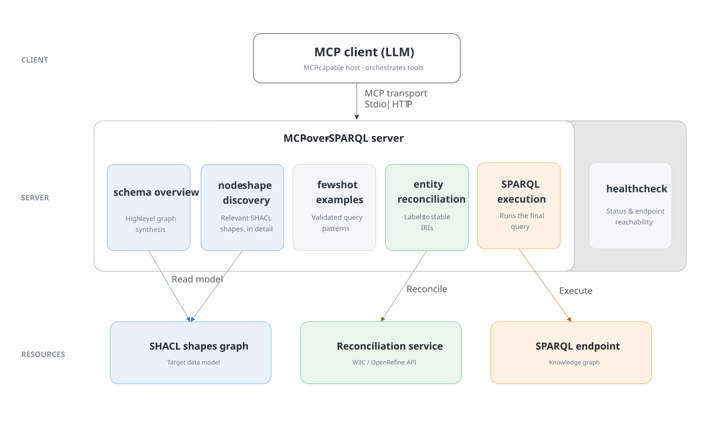
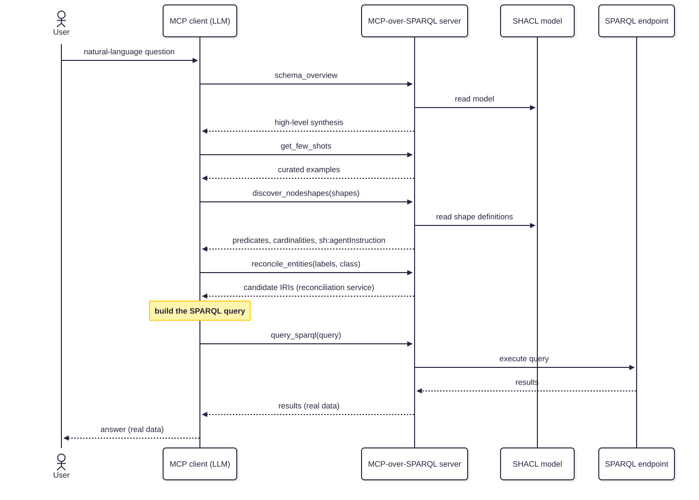

Abstract
MCP-over-SPARQL is a Model Context Protocol server that provides tools enabling a client LLM to successfully write an execute a valid SPARQL query on a knowledge graph. The server connects an MCP-capable LLM client to a SPARQL endpoint together with other tools for retrieving an overview of the graph, curated query examples, and the detailled knowledge graph structure from a SHACL specification. In addition, it exposes a reconciliation function to retrieve entity URIs from a label and a type. This provides all the necessary primitives for an LLM client to turn a natural language question into a SPARQL query, using the correct graph structure, and with valid URI identifiers. The system reduces schema guessing and returns data from the endpoint. We demonstrate the approach on the the Unique Interoperability Referential of Medical Specialties (RUIM) from the French e-health agency, and show how it supports controlled, schema-aware querying of domain-specific knowledge graphs.
Introduction
Knowledge graphs are sources of trustworthy structured data, but leveraging this data directly in SPARQL [1] requires understanding the underlying schema, the available predicates, and the identifiers used in the graph. For data publishers, making their knowledge graph query-able by AI is another dissemination channel to maximise its dissemination and reuse.
Large Language Models (LLM) can query external sources when they are connected to external tools through the Model Context Protocol [2]. In this demo, we present an MCP server driven by a SHACL [3] specification of the underlying knowledge graph. The server exposes the structure of the graph through a small set of schema-grounded tools that let an MCP-capable client discover the schema, inspect relevant types, reconcile named entities, and execute SPARQL queries.
System Architecture
MCP-over-SPARQL sits between an MCP-capable LLM client and a SPARQL endpoint. Rather than exposing only a SPARQL endpoint service, its exposes the tools depicted in Figure 1 below.

Fig. 1: Architecture of MCP-over-SPARQL: an MCP client (LLM) drives the server’s tools, which are grounded in a SHACL model of the data, resolve entities through a reconciliation service, and execute queries against the project’s SPARQL endpoint.
The server can be accessed through two transports. A local stdio transport is used for development, testing, and local use, while a Streamable HTTP transport serves remote clients. The server can be configured per “project”. Each project corresponds to a specific knowledge graph, with its own SHACL model and SPARQL endpoint, and is exposed as a dedicated MCP server.
MCP Tools description
The schema-overview tool derives a high-level synthesis of the graph… it returns markdown… it lists… The schema overview is deliberately incomplete, it acts as a high-level table of contents that is not sufficient to write a correct query.
The graph structure discovery tool returns the detailed definitions of the shapes relevant to a question…. it also reads the SHACL file and returns a detailled list of properties for each kind of entity in the graph. For each property, the following information are provided: …
Beyond structural constraints, each shape can also carry natural-language guidance through sh:agentInstruction, a non-validating feature introduced in SHACL 1.2. When the client discovers a shape, these instructions are returned alongside its predicates and cardinalities, allowing the data publisher to guide how a class or property should be used, for example by indicating which identifier to prefer or how to interpret a relation. The schema therefore conveys not only the structure of the graph, but also human-authored hints for the agent.
The example tools…
The entity reconciliation MCP tool relies on an underlying service that conforms with the Reconciliation Service API Specification [4]. The reconciliation tool takes 2 input parameters : a label to search, and the URI identifier of the shape of the entity to lookup. It returns a list of entities, each with a score. The actual implementation of this service can be either a plain SPARQL-based search (not efficient and not suitable for plain-text lookups), proprietary full-text indexing capabilities of the triplestore, an existing API, or a custom-built search index, filled with the labels of the entities from the graph. Splitting
Finally, the SPARQL tool simply takes a SPARQL query as input, and returns the result in the XXXX format.
Schema-Grounded Query Workflow
To turn a natural-language question into a correct SPARQL query, the client follows an explicit multi-step workflow rather than relying on a single black-box service. It first requests a high-level schema overview, then retrieves a few curated example queries, discovers the node shapes relevant to the question, reconciles any named entities to real IRIs, and finally builds and executes the query. Splitting the task this way keeps each step explicit and inspectable. Figure 2 illustrates this lifecycle for a single request.

Fig. 2: Lifecycle of a single query: the MCP client orchestrates the server’s tools to turn a natural-language question into a query executed against the endpoint, returning real data.
This ordering is enforced by the tools’ own descriptions, which instruct the client to go through discovery first and never to guess predicates or paths from prior knowledge.
When the question mentions named entities, they are reconciled to the IRIs actually used in the graph before the final query is assembled, so the query targets exact resources rather than relying on fragile label matching. The query is then executed against the endpoint, and the user receives its result, real data drawn from the graph, produced by a query the client could not have written from its prior knowledge alone.
Demonstration
The demo MCP-over-SPARQL server URL is https://services.sparnatural.eu/mcp/ruim-mcp. It exposes the structure of the RUIM [5], with its SHACL specification [6].
Using Claude Sonnet 4.6, low effort, with the request “What are the generics of perindopril ?” (“Quels sont les génériques du périndopril ?”), and after reading the tools from the MCP-over-SPARQL server, the AI follows this sequence:
- Calls
get_few_shotsto read example queries - Calls
discover_nodeshapeswith the shapesmed:GroupeGenerique(“generic drug grouping”) andmed:SpecialitePharmaceutique(“medicinal product”) and read their properties - Calls
reconcile_entitieswith label “périndopril” and typemed:SpecialitePharmaceutique- no result as “périndopril” is actually a Substance and not a medicinal product. - Calls
reconcile_entitiesagain, this time with typemed:Substance- it returns 4 Substances - Then produces and executes the following SPARQL query
PREFIX rdf: <http://www.w3.org/1999/02/22-rdf-syntax-ns#>
PREFIX rdfs: <http://www.w3.org/2000/01/rdf-schema#>
PREFIX med: <http://data.esante.gouv.fr/ansm/medicament/>
SELECT DISTINCT ?groupeLabel ?refLabel ?genLabel ?titulaire
WHERE {
?groupe rdf:type med:GroupeGenerique ;
rdfs:label ?groupeLabel .
# Le groupe doit contenir au moins une spécialité à base de périndopril (en substance active)
{
?groupe med:specialiteDeReference ?ref .
?ref med:substanceActive <http://data.esante.gouv.fr/ansm/medicament/Substance_09586> .
} UNION {
?groupe med:specialiteDeReference ?ref .
?ref med:substanceActive <http://data.esante.gouv.fr/ansm/medicament/Substance_46744> .
} UNION {
?groupe med:specialiteDeReference ?ref .
?ref med:substanceActive <http://data.esante.gouv.fr/ansm/medicament/Substance_52431> .
} UNION {
?groupe med:specialiteDeReference ?ref .
?ref med:substanceActive <http://data.esante.gouv.fr/ansm/medicament/Substance_69916> .
}
OPTIONAL { ?ref rdfs:label ?refLabel }
?groupe med:specialiteGenerique ?gen .
?gen rdfs:label ?genLabel .
OPTIONAL { ?gen med:titulaireCourant ?tit . ?tit rdfs:label ?titulaire }
}
ORDER BY ?groupeLabel ?genLabel
LIMIT 100
Note how the AI was able to overcome two ambiguities with the user query : 1/ it asking for generic drugs but using the name of a substance and not a product 2/ the name of the substance was itself ambiguous. Note also how the query is correct at the first iteration, and how extra properties, such as human-readable labels and the manufacturer, have been added, although not explicitely requested.
We also note that in this case, the tool schema_overview was not called by the AI. The correct shapes identifiers are already listed as enum in the tool description of discover_nodeshape, hence the AI did not felt the necessity to call the overview.
Conclusion and Future Work
Ethics and Environmental Footprint
It must be recalled that the AI systems used are responsible of an increase in the demand for electricity, water, and rare materials. Moreover, The providers of these systems do not disclose the content of their models, the source of the data used, or the work done in poor countries to make it usable.
Declaration on Generative AI
The authors have not employed any Generative AI tools for the writing of this submission.